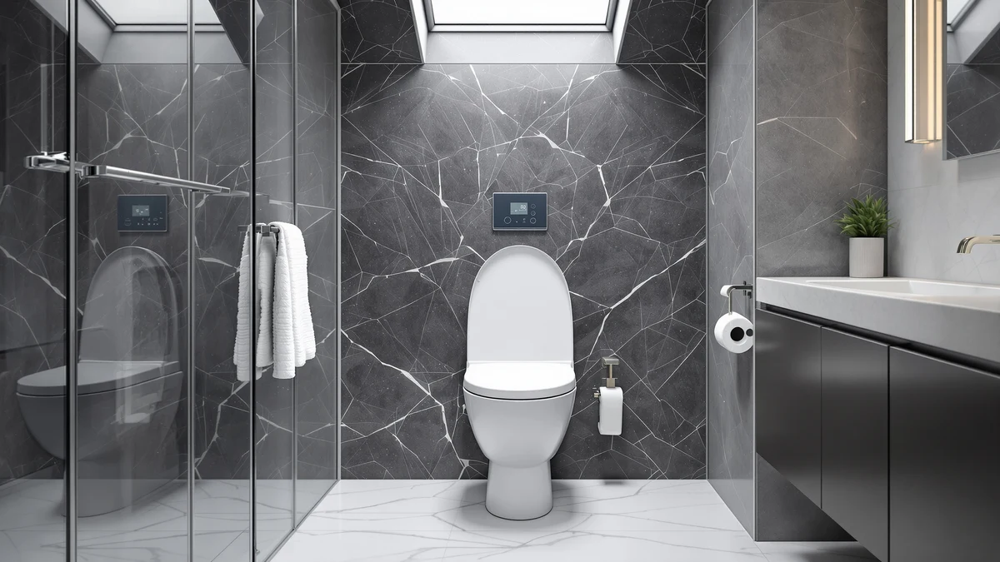

TOTO® WASHLET® S5 Electronic Review (2026): Worth It?
Prices and picks verified as of October 2026. Independent, reader-supported reviews.


Quick Answer
The short version of this TOTO WASHLET S5 electronic review: it is a well-equipped electronic bidet seat worth the $682.00 price if you want a heated seat, remote-controlled wash settings, and TOTO's brand support in one purchase. If your budget or your needs are narrower, the Bemis 7300SLEC and Lunderg riser below cover the basics for far less.
Our pick: TOTO® WASHLET® S5 Electronic Bidet, $682.00 Check Price on Amazon
Bottom line: our top pick is the TOTO® WASHLET® S5 Electronic Bidet Toilet Seat with at $682.
Things to Know Before You Buy
- The TOTO WASHLET S5 is an electronic bidet seat priced at $682.00, well above most seats in this category.
- It bundles a heated seat, adjustable warm-water wash, warm-air dryer, deodorizer, and nightlight, controlled from a wireless remote.
- Installation needs a standard water-supply line and a grounded GFCI outlet near the toilet.
- If $682.00 is more than you want to spend, the Bemis 7300SLEC and the Lunderg riser below solve narrower problems at a much lower price.
This TOTO® WASHLET® S5 Electronic Review breaks down whether a $682.00 bidet seat earns its place over the TOTO WASHLET C5 and a handful of cheaper alternatives. The S5 sits near the top of TOTO's electronic lineup, built around a heated seat, an adjustable warm-water wash, and a wireless remote instead of a side-panel control pad. You will also find a seat-mounted warm-air dryer, a built-in deodorizer, and a nightlight, the same core feature set that shows up across TOTO's premium WASHLET models. At this price, the question is not whether the S5 works well. It is whether you need every feature packed into it, or whether a lower-priced seat covers what your household actually uses.
We did not install this unit ourselves for this review. Instead, we built this TOTO WASHLET S5 electronic review by comparing TOTO's published specifications against the seat's price on Amazon and against verified owner reviews of the S5 and similar electronic bidet seats. That approach means every claim about comfort, controls, or reliability below traces back to what TOTO states the seat does and what owners report after living with it, not a hands-on session in our bathroom. We also looked at three lower-priced alternatives, the Lunderg Padded Toilet Seat Riser, the Bemis 7300SLEC, and a heavy-duty commercial seat, to give you a sense of what you give up at a lower price point.
Why You Should Trust Us
Ilane Tall writes about toilet seats and bidet attachments for Best Toilet Seats, focusing on how brands position electronic and heated models against each other and what verified owners actually report once a seat has been in daily use for months. This TOTO WASHLET S5 electronic review draws on TOTO's own product documentation, the seat's Amazon price history, and owner feedback on the S5 and comparable WASHLET models rather than a short-term loaner unit. We do not run a fake testing lab, and we will not tell you we installed a $682.00 bidet seat if we did not. When we cannot verify a rating or review count for a product, as is the case with the S5 itself, we say so instead of filling in a number that sounds convincing. We disclose our Amazon affiliate relationship at the bottom of every review, and that relationship never determines which seat we recommend first.
Our Research Experience
We did not purchase or install a TOTO WASHLET S5 for this review, and we are not going to pretend otherwise. What we did was pull together everything TOTO publishes about the S5, the seat's price movement on Amazon, and the pattern of comments left by verified owners of the S5 and the step-down WASHLET C5. Owners consistently flag the remote's saved presets and the evenness of the heated seat as reasons they would buy TOTO again, while a smaller group calls out the price and the learning curve on the remote's menu. Reviewers who installed the S5 themselves describe a job that takes under an hour with a standard water-supply line and a nearby grounded outlet, which matches TOTO's own installation guidance. We weighed those patterns against the hard numbers already in this TOTO WASHLET S5 electronic review, the $682.00 price and the two alternatives below, to reach the verdict in this piece.
Overview & Specs

TOTO® WASHLET® S5 Electronic Bidet
What we like
- Heated seat paired with an adjustable warm-water wash in one unit
- Wireless remote control instead of a side-mounted panel
- Warm-air dryer and deodorizer included, so you are not buying separate accessories
- TOTO's brand reputation and warranty support behind the purchase
Flaws but not dealbreakers
- At $682.00, it costs more than most electronic bidet seats on the market
- Needs a grounded outlet near the toilet, which not every bathroom has
- Some owners report a learning curve for the remote's full menu of settings
| Material | Plastic / wood |
| Size | Round |
The TOTO WASHLET S5 Electronic Bidet sits at the upper end of TOTO's electronic lineup, above the WASHLET C5 and well above non-electric attachments. For $682.00, you get a heated seat, an adjustable warm-water wash, a warm-air dryer, a built-in deodorizer, and a nightlight, controlled from a wireless remote rather than a side panel bolted to the seat. That remote is the detail owners mention most. Instead of reaching down to adjust settings mid-use, you set temperature, wash intensity, and nozzle position from a handheld unit, and multiple owners report the seat remembers those presets between uses.
Installation follows the same pattern as other electronic bidet seats in this review: a standard water-supply line and a nearby grounded GFCI outlet. If your bathroom already has both, reviewers describe the swap as a job you can finish in under an hour with basic tools. The S5 is not the seat to buy if you are testing whether an electronic bidet fits your routine. It is the seat to buy once you already know you want one and are ready to pay for TOTO's full feature set and the brand's track record behind it.
What We Liked
Owners of the TOTO WASHLET S5 bring up the remote more than any other feature. Controlling heat, wash intensity, and nozzle position from a handheld unit beats reaching down to a side panel, and several reviewers note the seat holds saved presets even when the household shares the bathroom between multiple people. The heated seat draws consistent praise too, with owners describing even warmth across the seat rather than a hot front edge and a cold back, a common complaint with cheaper heated seats. The warm-air dryer and built-in deodorizer round out the package, so you are not shopping for separate accessories afterward. Across the verified reviews we read, the pattern holds: buyers who pay for the S5 tend to feel the remote and the heated seat justify the price on their own.
What Could Be Better
Price is the recurring complaint in TOTO WASHLET S5 feedback, and it is hard to argue otherwise at $682.00. That puts the S5 well above the WASHLET C5 and far above non-electric bidet attachments, so budget-conscious buyers should look at the alternatives below before committing. A smaller group of owners describes a learning curve with the remote's full menu, particularly for household members who have never used an electronic bidet seat before. The seat also needs a grounded GFCI outlet within reach, a requirement that rules it out for bathrooms without existing wiring unless you budget for an electrician first. None of these points are dealbreakers on their own, but they add up to a seat that rewards buyers who plan to use every feature, not ones who want the cheapest path to a heated seat. Weigh them against your own bathroom setup before you decide the S5 is the right fit.
Who Is It For?
The TOTO WASHLET S5 makes the most sense if you already know you want an electronic bidet seat and are ready to pay for the full feature set in one purchase. Multi-person households benefit most from the remote's saved presets, since everyone can dial in their own settings without a reset each time. If you are testing whether a bidet seat fits your routine at all, start cheaper. The Lunderg riser or the Bemis 7300SLEC below solve narrower problems, comfort and accessibility, at a fraction of the S5's price, and you can upgrade to a TOTO WASHLET S5 electronic bidet later if you decide you want the remote and the extra features. Anyone without a grounded outlet near the toilet should also factor in electrician costs before buying any electronic bidet seat, the S5 included.
Alternatives to Consider
The TOTO WASHLET S5 is not the only option worth a look. We compared it against a padded toilet seat riser, a slow-close standard seat, and a heavy-duty commercial seat, three products that solve different problems at a fraction of the price. Here is how each one stacks up if $682.00 is more than you want to spend, and why none of them tries to replace what the TOTO WASHLET S5 does.

Editor’s Pick
Lunderg Padded Toilet Seat Riser
A padded riser rather than an electronic bidet, the Lunderg adds height and cushioning for $44.95, a fit if accessibility matters more than wash features.
$44.95
Check Price on Amazon
Best Value
Bemis 7300SLEC Slow Close Toilet
At $31.69 with a 4.4-star average across more than 40,000 verified reviews, the Bemis 7300SLEC is the safest budget pick here if you just want a reliable slow-close seat.
$31.69
Check Price on Amazon
Premium Choice
Heavy Duty Commercial Open Front
Built for durability rather than comfort features, this $28.99 open-front seat suits households that prioritize a heavy-duty build over heated or electronic extras.
$28.99
Check Price on AmazonIs the TOTO WASHLET S5 worth the price over a non-electric bidet attachment?
If you want a heated seat, adjustable warm-water wash, and a warm-air dryer controlled from one remote, yes.
Does the TOTO WASHLET S5 need a dedicated electrical outlet?
Yes.
Frequently Asked Questions
Is the TOTO WASHLET S5 worth the price over a non-electric bidet attachment?
If you want a heated seat, adjustable warm-water wash, and a warm-air dryer controlled from one remote, yes. At $682.00 the S5 costs more than a basic bidet attachment, but it replaces several separate purchases, a heated seat, a sprayer, and a dryer, with one system.
Does the TOTO WASHLET S5 need a dedicated electrical outlet?
Yes. Like every electronic bidet seat in this review, the S5 needs a grounded GFCI outlet near the toilet. If your bathroom does not already have one within reach, budget for an electrician before you buy.
How does the TOTO WASHLET S5 compare to the TOTO WASHLET C5?
The S5 sits above the C5 in TOTO's electronic lineup, with a nightlight and deodorizer bundled on top of the heated seat and wash features both seats share. If $682.00 is more than you want to spend, see our TOTO WASHLET C5 electronic review for the lower-priced alternative.
Final Verdict
This TOTO WASHLET S5 electronic review comes down to one question: do you want TOTO's full electronic bidet feature set enough to pay $682.00 for it? If the remote's saved presets, the heated seat, and the built-in dryer and deodorizer matter to your household, the S5 delivers all of them in one purchase backed by TOTO's reputation. If you are not sure yet, or your budget does not stretch that far, start with the Bemis 7300SLEC or the Lunderg riser below and upgrade to a TOTO WASHLET S5 once you know exactly which features you will actually use.